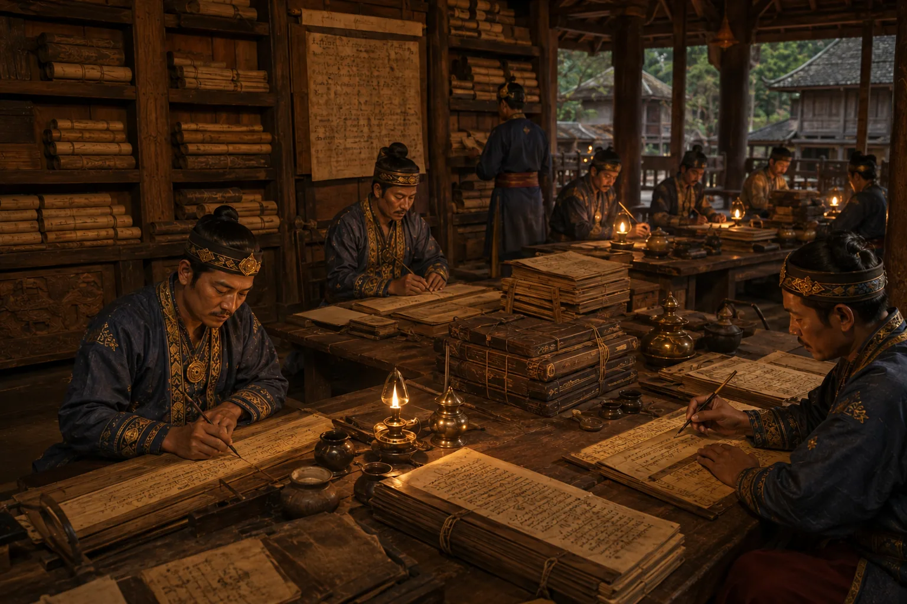

Writing of the First Ahom Buranji (Royal Chronicles)
c. 1253–1268 · The coming of Sukaphaa

Sukaphaa decrees that royal scribes and priests record every event, battle, decree, and genealogy on Sanchi bark (agarwood paper), establishing Assam's Buranji tradition.
Sources have not yet been catalogued for this record.
People: Chaolung Sukaphaa